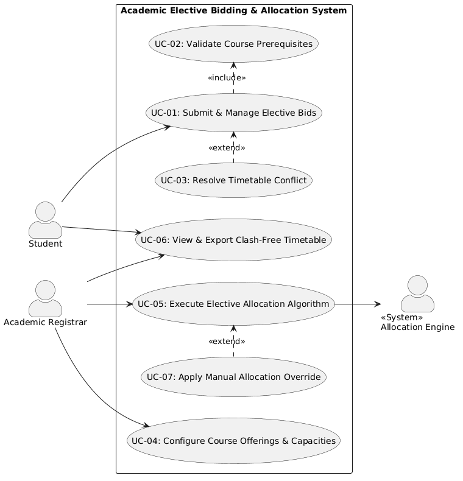
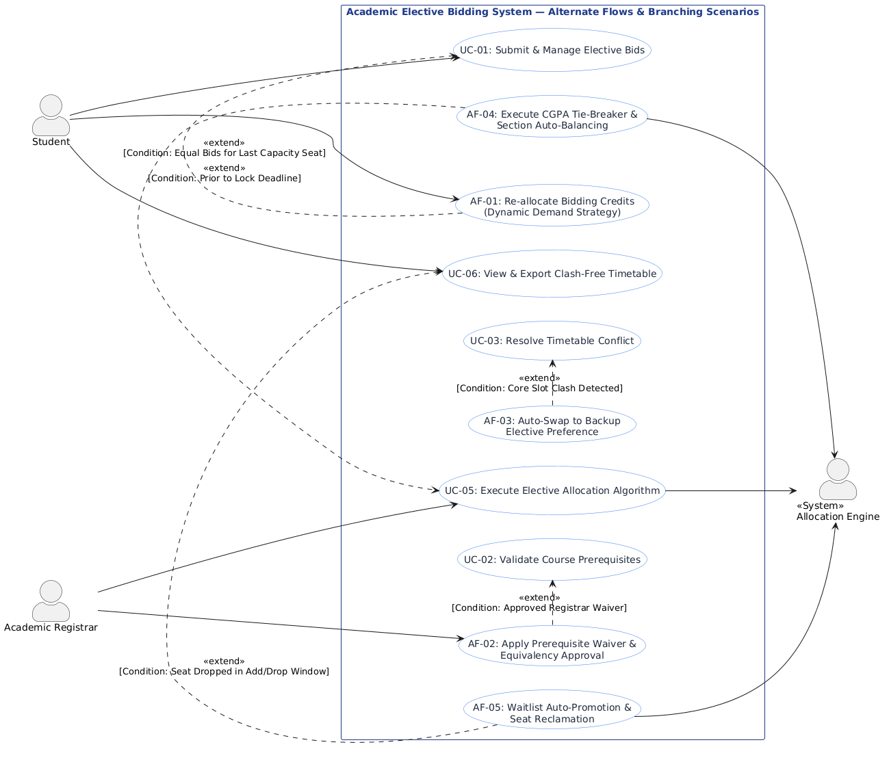

| Req ID | Type | Description | Priority | Acceptance Criteria | Rationale |
|---|---|---|---|---|---|
| FR-001 | Functional | The system shall allow students to distribute 100 bidding credits across their ranked elective preferences and validate prerequisite course completions. | High | Pass: Credits deduct accurately (sum == 100) and prerequisites validated. Fail: Total allocated credits != 100 or unmet prerequisites bypassed. |
Ensures fair bid distribution aligned with student priority and academic eligibility. |
| FR-002 | Functional | The system shall allow the Academic Registrar to configure elective course offerings, section capacities (min/max seats), and designated timetable slot constraints. | High | Pass: Course records saved with designated capacities and slot times. Fail: Duplicate slot assignments without multi-section flag or invalid seat caps. |
Establishes the boundary conditions and constraints required by the automated allocation solver. |
| FR-003 | Functional | The system shall execute the multi-criteria optimization solver to allocate courses based on bid weightings, CGPA tie-breakers, and room/slot collision avoidance rules. | High | Pass: All eligible bids evaluated; seats filled up to max limit with 0 timetable clashes. Fail: Student assigned to overlapping lecture slots or oversubscribed course. |
Core algorithmic automation eliminating manual clash resolution and ensuring objective allocation. |
| FR-004 | Functional | The system shall allow students to view real-time provisional seat demand percentages and adjust/reallocate their submitted bidding points prior to the deadline window closure. | Medium | Pass: Bid updates reflected instantly in student profile and draft pool before lock time. Fail: Modifications permitted after deadline timestamp. |
Provides transparency on course popularity, allowing students to strategize point allocation dynamically. |
| FR-005 | Functional | The system shall publish final allocation results, generate individualized clash-free timetables for students, and export master enrollment rosters for the Academic Registrar. | Medium | Pass: Downloadable PDF/ICS schedule produced with 0 slot clashes; Registrar roster matches allocated student IDs. Fail: Incomplete roster export or unassigned enrolled courses. |
Closes the registration lifecycle with actionable student schedules and official registrar records. |
| NFR-001 | Non-Functional (Performance) |
The final elective allocation solver shall process 5,000 student bids and resolve schedule conflicts in under 30 seconds. | High | Pass: Benchmarking tests confirm execution time < 30 seconds for 5,000 concurrent student bids under simulated peak load. Fail: Solver execution exceeds 30 seconds or server runs out of memory. |
Prevents server bottlenecks and ensures rapid turnaround between bidding closure and timetable publishing. |
| NFR-002 | Non-Functional (Security) |
The system shall enforce Role-Based Access Control (RBAC) and maintain an immutable audit trail of all bid submissions, modifications, and administrative overrides. | High | Pass: Unauthorized role access blocked (403 Forbidden); 100% of bid modification events logged with timestamp, user ID, and prior state. Fail: Unauthenticated bid injection or unlogged state change. |
Guarantees academic integrity, prevents tampering, and ensures auditability during student grievance redressals. |

Primary Actor: Student | Secondary Actor: Academic Database / Prerequisite Service | Priority: High
Preconditions:
Postconditions:
«include» UC-02: Validate Course Prerequisites to check completed credits against prerequisites.
«extend» UC-01)
«extend» UC-02)
«extend» UC-03)
«extend» UC-05)
«extend» UC-06)
| Exception ID | Target UC | Exception Title | Error Category | Severity | Detection & System Action |
|---|---|---|---|---|---|
| EF-01 | UC-01 | Credit Sum Mismatch ($\neq 100$) | Data Validation | High | Halt commit; highlight fields; display dynamic point counter; prompt readjustment. |
| EF-02 | UC-01 / UC-02 | Unmet Prerequisite Check Failure | Domain Rule | High | Reject line-item bid; flag transcript gap; prompt course swap or waiver submission. |
| EF-03 | UC-01 / UC-03 | Unresolvable Slot Collision | Hard Constraint | High | Flag schedule clash with core slots; reject invalid matrix; prompt non-conflicting choice. |
| EF-04 | UC-01 | Deadline Expiry Lockout | Temporal / State | Critical | Abort transaction; enforce READ_ONLY lock; preserve prior pre-deadline submission state. |
| EF-05 | UC-05 | Solver Convergence / Timeout | Performance | Critical | Watchdog kills process at 30s limit; roll back DB checkpoint; alert Registrar for relaxation. |
| EF-06 | UC-01 / UC-05 | DB Concurrency Deadlock | Infrastructure | High | Catch DB lock; execute idempotent exponential retries; enqueue bid request if load spikes. |
| EF-07 | UC-07 | Unauthorized Override Attempt | Security / RBAC | Critical | Deny access (HTTP 403); write immutable security audit log entry; flag origin IP. |